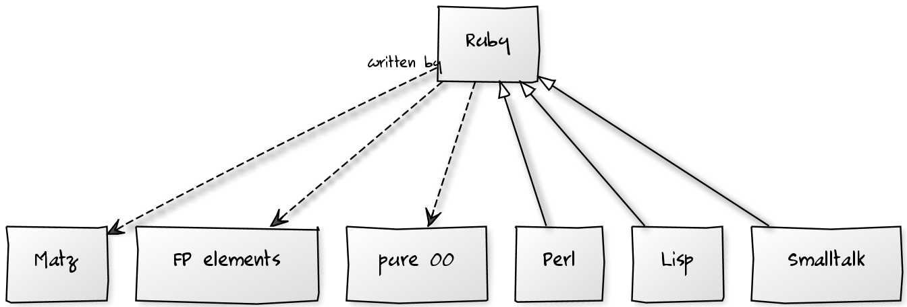

ruby intro
Ruby ecosystem

in 1993 by Yukihiro Matsumoto
PHILOSOPHY of RUBY
HUMANISTIC
Ruby is simple in appearance but is very complex inside just like our human body!
Elegant, easy to use, pleasure to programm!
Matz (Yukihiro Matsumoto)
Everething is Object
0.class #=> Fixnum
/^reg/.class #=> Regexp
(1..10).class #=> Range
MyClass.class #=> Class
Class.class #=> class
true.class #=> TrueClass
nil.class #=> NilClass
Internal DSL
Migration.up do
create_table 'users', inherits: 'stuff' do |t|
t.string :login, not_null: true, unique: false
t.date :bith_date
end
end
Internal DSL Implementation
class Migration
class << self # class methods
def up(&block)
#we eval block in scope of this object (potentialy dangerous)
instance_eval(&block)
connection.execute( declarations.join(';'))
end
def declarations; @declarations ||=[]; end
def create_table(name, opts={})
t = Table.new(name, opts)
yield t
declarations<< t
end
end
end Internal DSL Implementation
class Table
def initialize(name,opts)
@name, @opts = name, opts
end
def column(name, type, opts={})
opts.merge(name: name, type: type)
(@columns ||= [])<< opts
end
def string(name,opt)
columns name, 'varchar', opts
end
def date(name,opt)
columns name, 'date', opts
end
def to_sql
%Q[create table #{@name} (#{@columns.map{|k,opts| "#{k} #{opts[:type]}"}.join(',')})]
end
end Operators as methods, method punctuation
class Point
def initialize(x,y); @x, @y = x, y; end
def [](coord)
self.send(coord) if self.respond_to?(coord)
end
def +(pt)
raise "Ups" unless pt.is_a?(Point)
@x += pt.x
@y += pt.y
end
end
def pt(*args)
Point.new(*args)
end
pt(1,2) + pt(2,1) #=> pt(3,3)
Classes body is active!
class Programmer
if Time.now.monday?
def monday_method
"monday, monday"
end
end
end
ActiveRecord Validation DSL
class User < ActiveRecord::Base
validates :email, present: true, unique: true
has_many :groups
end
user = User.new(name: 'Admin')
unless user.save
puts user.errors #=> ['Email is required']
end
user.groups #=> groups
Modules
module Loggable
def log(message)
logger.debug(message)
end
def profile(name)
start = Time.now
yield
log("#{name}: #{Time.now - start} sec.")
end
end
class Service < BaseService
include Loggable
def serve
log("start job")
profile "long operation" do
#...
end
end
end
Ruby Installation

curl -L https://get.rvm.io | bash -s stable --ruby #install rvm
rvm install 2.0 #install ruby 2
rvm install 1.9.3
rvm install jruby
rvm use 2.0
#or create in your project .rvmrc file with required ruby
RubyGems.org: Manage gems
gem install rails
gem list
# *** LOCAL GEMS ***
# activesupport (3.2.11)
# builder (3.1.4)
# bundler (1.0.22 ruby)
# coderay (1.0.8)
# colorize (0.5.8)
# diff-lcs (1.1.3)
# expression_parser (0.9.0)
# github-markdown (0.5.3)
# github-markup (0.7.5)
# grit (2.5.0)
# huffshell (0.0.11)
gem update rails
Bundler: Manage Project Deps

gem install rails
gem install bundler
# Gemfile in root of your project
source "https://rubygems.org"
gem "nokogiri"
gem "rack", "~>1.1"
gem "rspec", :require => "spec"
bundle install
bundle update
Testing: Rspec; Factory Girl
ActiveRecord test in tansactions with rollback
#$ gem install rspec factory_girl or put it in your Gemfile
factory :user do
name "John"
email "email"
end
describe User, "#score" do
subject = { Factory.build(:user, email: nil) }
it "validate email" do
subject.validate
subject.errors.should include(/email requried/)
end
end
Testing: Capibara
#Capibara
it "signs me in" do
visit '/sessions/new'
within("#session") do
fill_in 'Login', :with => 'user@example.com'
fill_in 'Password', :with => 'password'
end
click_link 'Sign in'
page.should have_content 'Success'
end
Automation: rake
#$ gem install rake
namespace :mydb do
desc "dump db"
task :dump do
file = "/opt/backup/#{Time.now}.back"
`pg_dump mydb > #{file} && rm #{/back/last} && ln /back/last #{file}`
end
desc "upload to s3"
task :s3 do
`s3cmd put /back/last s3://mycompany/back/last`
end
desc "maintain"
task :default=>[:dump, :s3]
end
#$ rake -T
#$ rake mydb:s3
Rails: Web Dev that doesn't hurt

- generators
- MVC
- migrations
- rakes
- routing
- assets
- everething for your productivity
Rails: Generators
rails new myproject
echo 'gem "haml"' >> Gemfile
echo 'gem "simple_form"' >> Gemfile
echo 'gem "rspec"' >> Gemfile
echo 'gem "twitter_bootstrap"' >> Gemfile
bundle install
cd myproject
rake db:create
rails g controller wellcome index
rails g scaffold user name email bithdate:date
rake db:create db:migrate
rails s -p 80
chromium-browser http://localhost
Rails: Migrations
rails g migration create_users_with_groups
def up
create_table 'users' do |t|
t.string :email
t.string :status
t.string :password
end
create_table :participations do |t|
t.timestamp :start_time
t.references :user
t.references :group
end
create_table 'groups' do |t|
t.integer :owner
t.string :name
end
add_index :users, :email
end
Rails: ActiveRecord
class User < ActiverRecord::Base
validates :email, presense: true, uniqueness: true
has_many :participations
has_many :groups, through: :participations
scope :active, -> { where(status: 'active' }
end
u = User.create(email: 'admin@m.io')
g = Group.create(name: 'admins')
u.groups<< g
User.active.include(:groups).order('email').each do |u|
puts "#{u.email}"
puts u.groups.map(&:name).join(', ')
end
Rails: Controllers
class UsersController < ApplicationController::Base
before_filter :require_login
respond_to :html, :xml, :json
def index
respond_with(@users = User.all)
end
def create
@user = User.create(params[:user])
respond_with(@user, :location => users_url)
end
private
def require_login
redirect_to login_path if current_user.nil?
end
end
Rails: Routing
match "/patients/:id" => "patients#show"
resources :photos
resources :photos, :as => "images"
match '*pages' => 'pages#show', :format => true
namespace :admin do
resources :posts, :comments
end
Rails: Views
%ul
- @users.each do |user|
%li.item= link_to user.name, user_path(user)
= simple_form_for (@quiz) do |f|
= f.error_notification
.inputs
= f.input :body
= f.fields_for :quiz_choices do |builder|
= render "quiz_choice_fields", :f => builder
%p= link_to_add_association "Add a choice",f, :quiz_choices
.actions
= f.button :submit
RAILS: Assets
Coffee
jQuery ->
$("#order_credit_card_number").blur ->
if CreditCard.validNumber(@value)
$("#credit_error").text("")
else
$("#credit_error").text("Invalid credit card number.")
Scss
a {
color: $main-color;
text-decoration: none;
&:hover {
text-decoration: underline;
}
}
RAILS: tests/specs
- Unit Tests for Models and utils (FactoryGirl)
- Request Specs (Capibara + Selenium/Webkit)
- Mailers Specs
- Performance Tests
RAILS: deploy
- Capistrano
- Chef
- Heroku
RAILS: enginies plugins gems
- devise
- simple form
- act_as_{commentable, netsted_sets, statemachine, ...}
- twitter bootstrap, burbon, compas etc
- and more...